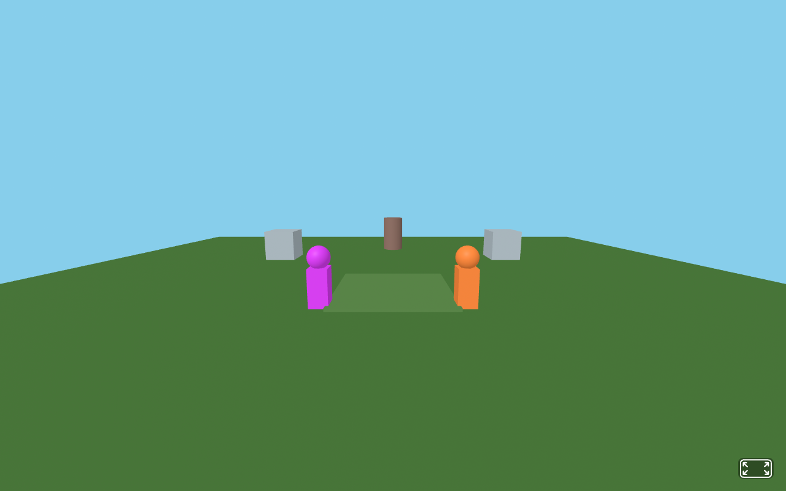
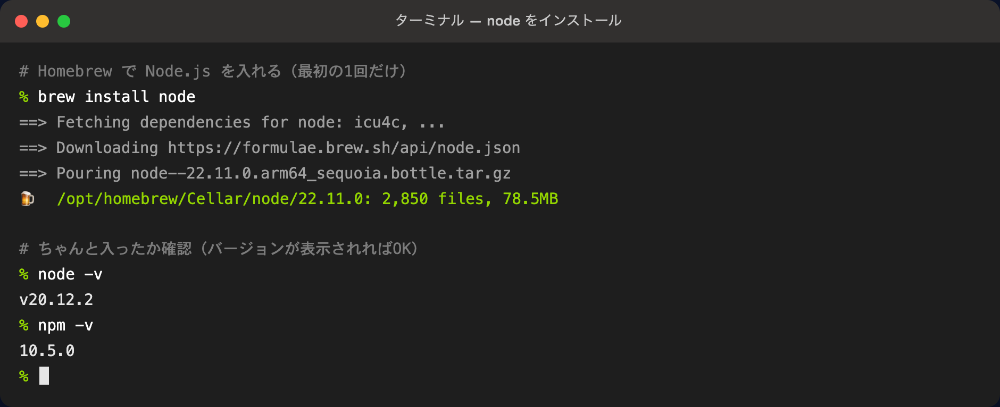
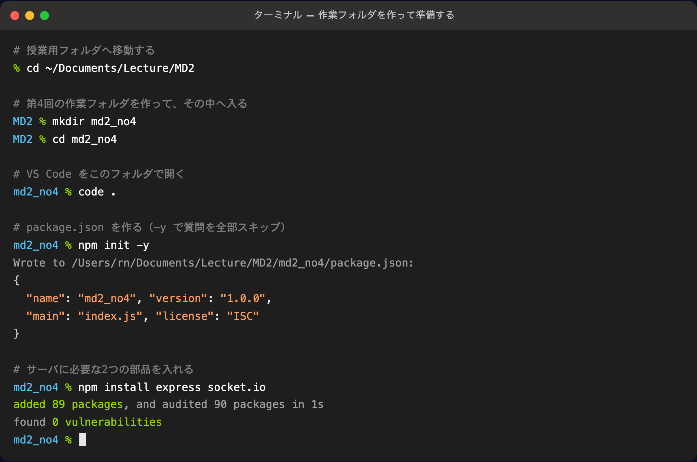
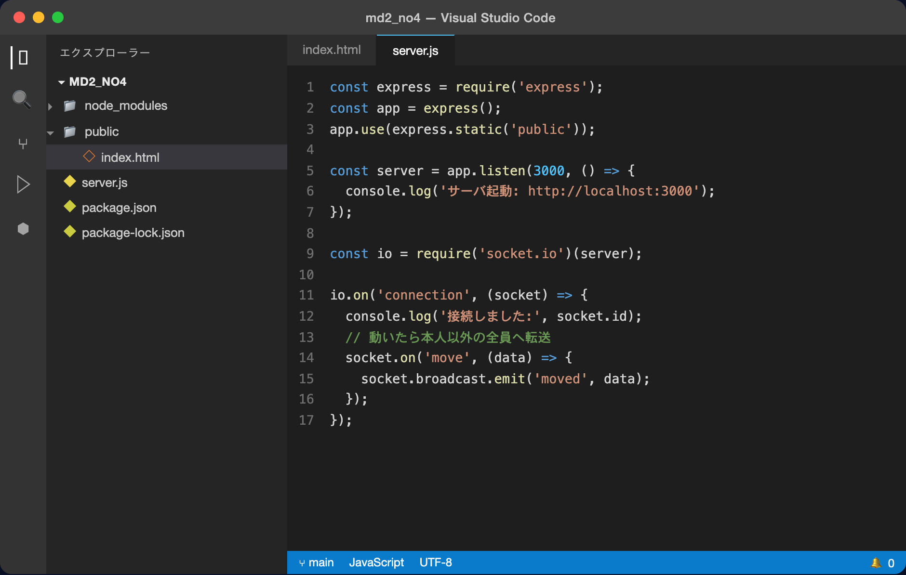
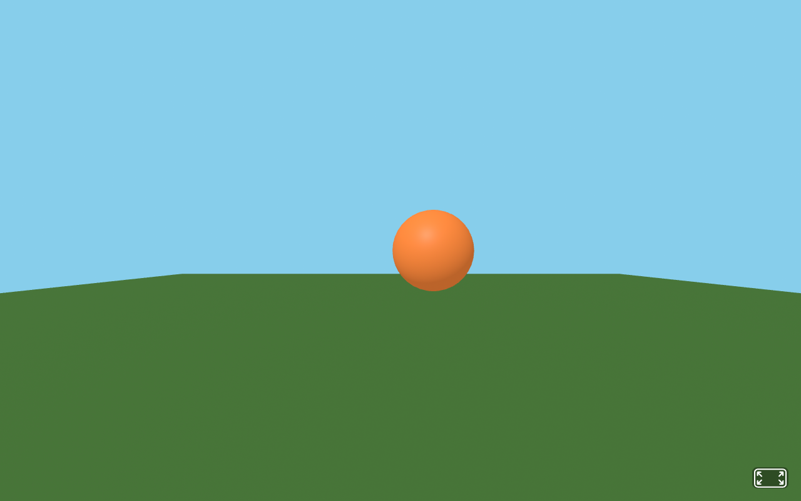
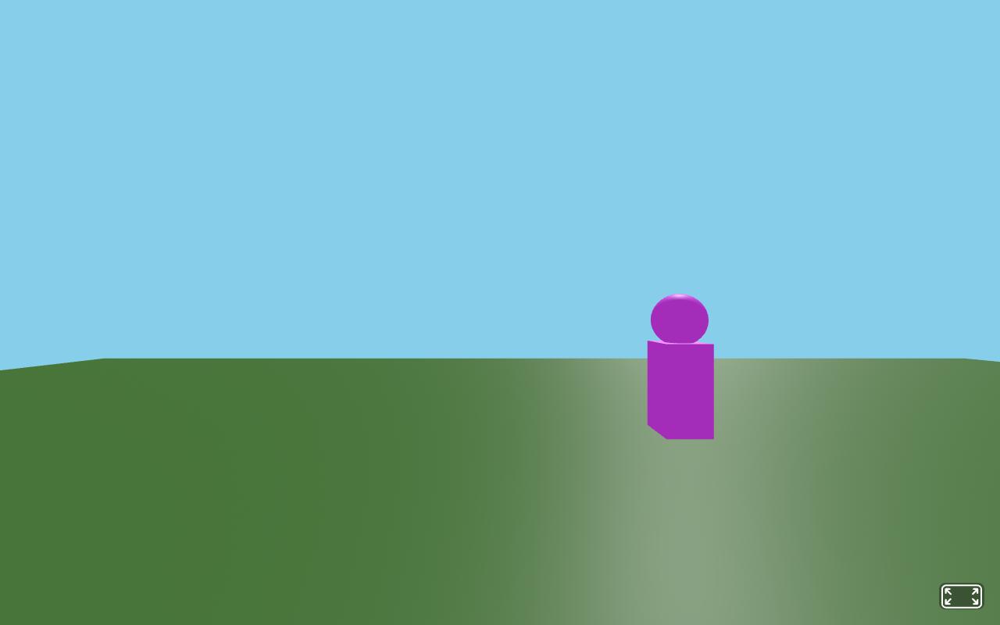
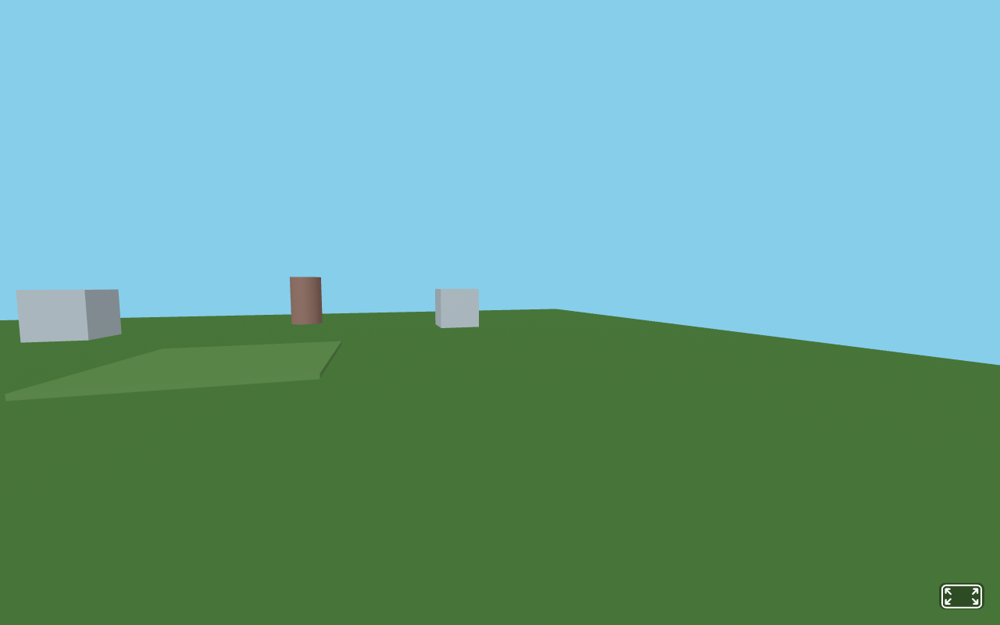
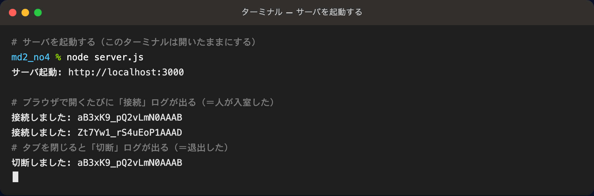
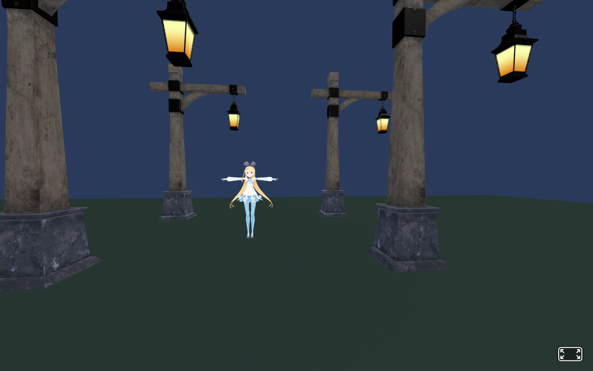

武蔵野大学データサイエンス学部
武蔵野大学国際データサイエンス学部（通信教育部）
中村 亮太
第3回は「与えられたデータ（サッカーCSV）」を空間で可視化した。第4回は逆に、自分たちが同じ空間に入って動き、その行動データが生まれる"装置"を作る。カギはサーバ（Node.js）とSocket.IO。ブラウザ同士をつなぎ、お互いのアバターが動いて見えるマルチプレイ空間を、手を動かして完成させる。（集めたデータの"分析"は次回のテーマ。今日はまず「みんなで動ける」を実現する。）

テーマは引き続き 「バーチャル空間で、データサイエンスを実践する」。第3回まではブラウザ1台の中だけで完結していた。第4回では初めて自分でサーバを立て、複数のブラウザをつなぐ。これは、後の回で人の行動データを集めて分析するための土台になる。
{x, y, z} と向き＝ある瞬間の行動データ1件（第2回のオブジェクト＝レコードと同じ形）集めたデータをグラフや統計で分析するのは次回以降のテーマ。今日は、その前提となるマルチプレイの仕組みを、1つずつ動かしながら完成させることに集中する。今日作る空間が、そのまま次回の「実験の舞台」になる。
本科目全体の流れ（再確認）。第4回は STEP 2（データを取る・扱う）の中でも、「データを自分たちで取りにいく」ための仕組みづくりの回。
express・socket.io を導入できるsocket.emit（送る）と socket.on（受け取る）の対で通信を組み立てられる| 節 | やること | 課題 |
|---|---|---|
| 1 | なぜサーバが要るのか（HTTP と リアルタイム通信） | 説明 |
| 2 | セットアップ（Node.js / npm init / npm install） | 説明・手順 |
| 🎮 | まず完成版を丸ごと動かして感動する（2画面で相手が動く） | 体験 |
| 👥 | いま動かした構成を口頭で確認する（コードは書かない） | グループワーク gw4 |
| 3 | 接続の骨格を自分の手で組み立て直す | 標準課題 std4-1 |
| 4 | 分解：なぜ「相手が見える」のか（送る→転送→受け取る） | 説明 |
| 5 | 自分の位置を送る（emit） | 標準課題 std4-2 |
| 6 | 相手のアバターを同期して完成（標準ゴール） | 標準課題 std4-3 |
| 7 | 名前ラベル・個別カラー・3Dモデル（自由創作） | 発展課題 adv4-1 |
※ 発展課題（adv4-1）は任意。ほかは実行結果のキャプチャ（ブラウザ・ターミナル）を記録します。
第3回まではブラウザ1台の中だけで動いていた（python -m http.server はファイルを配るだけ）。でも「お互いのアバターが見える」には、誰かの動きを別の人に届ける中継役が要る。それがサーバ。
| HTTP（これまで） | リアルタイム通信（今回） | |
|---|---|---|
| たとえ | 手紙（1往復で終わり） | 通話（つなぎっぱなし） |
| きっかけ | ブラウザが要求したときだけ | どちら側からでも、いつでも |
| 用途 | ページや画像を取りにいく | 位置の同期・チャット・通知 |
index.html などのファイルをブラウザに配る、軽量な土台クライアント同士は直接つながらない。全員がまずサーバにつなぎ、サーバが相手へ中継する。下の図で、クライアントAの動きがサーバを経由してクライアントBに届く様子が流れる。
server.js）を立てることから始める全員 Mac なので、Homebrew（Macの定番インストーラ）で Node.js を入れる。すでに入っている人は飛ばしてよい。ターミナル（ターミナル.app）を開いて、次を実行する。
Terminal# Node.js を入れる（数分かかる） brew install node # ちゃんと入ったか確認（バージョンが表示されればOK） node -v npm -v

node -v と npm -v でバージョンが表示されれば成功。数字は環境によって違ってよい（表示されること自体が「入った」の証拠）。まず brew.sh の手順で Homebrew を入れてから brew install node を実行する。npm は Node.js に付いてくるので、別途入れる必要はない。
第4回の作業フォルダ md2_no4 を作り、その中で VS Code を開き、必要な部品（express・socket.io）を入れる。ターミナルで順番に実行する。
Terminal# 1. 授業用フォルダへ移動する cd ~/Documents/Lecture/MD2 # 2. 第4回の作業フォルダを作って、その中へ入る mkdir md2_no4 cd md2_no4 # 3. VS Code をこのフォルダで開く code . # 4. package.json を作る（-y で質問を全部スキップ） npm init -y # 5. サーバに必要な2つの部品を入れる npm install express socket.io

added 89 packages ／ found 0 vulnerabilities が出れば成功。フォルダに node_modules と package-lock.json が増える。server.js は md2_no4 の直下、index.html は public フォルダの中に置く。この形が今回の決まり。
フォルダ構成md2_no4/ ├── server.js ← サーバ側（Node.js） ├── package.json ├── node_modules/ ← 部品置き場（自動生成） └── public/ └── index.html ← ブラウザ側（A-Frame）
code . を実行すると、VS Code がこのフォルダを開く。ここに server.js と public/index.html を作っていく。

server.js は次の std4-1 で作る。この回のゴールは 「相手のアバターが、目の前で動いて見える」こと。いきなり仕組みから入ると、いちばんの見どころ（＝隣の人と一緒に動く瞬間）が最後になってしまう。だから今日は順番を変える。まずは中身を気にせず、下の2ファイルをそのままコピペして動かし、感動を先に味わう。「なぜ動くのか」は、このあと節4以降で今動かしたコードを分解して理解していく。
server.js と public/index.html をそのままコピペして保存する（穴埋めなし・完成版）node server.js を実行するhttp://localhost:3000 を2つの窓で開き、片方を動かす → もう片方に相手が現れて動く 🎉📁 どこに作るか（節2の構成のとおり）
ファイル1: server.js（md2_no4 の直下）── 完成版・そのままコピペ
JavaScript ── server.jsconst express = require('express'); const socketIo = require('socket.io'); const app = express(); app.use(express.static('public')); const server = app.listen(3000, () => { console.log('サーバ起動: http://localhost:3000'); }); const io = socketIo(server); io.on('connection', (socket) => { console.log('接続しました:', socket.id); // 誰かが動いたら、その位置を「本人以外の全員」に転送する socket.on('move', (data) => { socket.broadcast.emit('moved', { id: socket.id, position: data.position, color: data.color }); }); // 退出したら、全員にそのIDを伝えてアバターを消してもらう socket.on('disconnect', () => { console.log('切断しました:', socket.id); io.emit('userLeft', socket.id); }); });
ファイル2: public/index.html（public の中）── 完成版・そのままコピペ
HTML ── public/index.html<!DOCTYPE html> <html lang="ja"><head> <meta charset="UTF-8"><title>マルチプレイ空間</title> <script src="https://aframe.io/releases/1.7.1/aframe.min.js"></script> <script src="/socket.io/socket.io.js"></script> </head><body> <a-scene id="scene"> <a-plane rotation="-90 0 0" width="30" height="30" color="#4a7a3a"></a-plane> <a-sky color="#87CEEB"></a-sky> <a-camera id="cam" position="0 1.6 4"></a-camera> </a-scene> <script> const socket = io(); const scene = document.getElementById('scene'); const cam = document.getElementById('cam'); // 自分の色を、5色からランダムに選ぶ const palette = ['#4FC3F7', '#FF8A3D', '#93D500', '#E040FB', '#FFD54F']; const myColor = palette[Math.floor(Math.random() * palette.length)]; // 100ミリ秒ごとに、自分の位置をサーバへ送る setInterval(() => { const pos = cam.object3D.position; socket.emit('move', { position: { x: pos.x, y: pos.y, z: pos.z }, color: myColor }); }, 100); // 他ユーザのアバター（スフィア1つ）を作る function createAvatar(id, color) { const avatar = document.createElement('a-sphere'); avatar.setAttribute('id', id); avatar.setAttribute('radius', '0.5'); avatar.setAttribute('color', color); scene.appendChild(avatar); return avatar; } // 他ユーザが動いたら、アバターを作る／位置を更新する socket.on('moved', (data) => { let avatar = document.getElementById(data.id); if (!avatar) avatar = createAvatar(data.id, data.color); avatar.setAttribute('position', data.position); }); // 他ユーザが退出したら、アバターを消す socket.on('userLeft', (id) => { const avatar = document.getElementById(id); if (avatar) avatar.parentNode.removeChild(avatar); }); </script> </body></html>
動かす
Terminal# md2_no4 の中で実行（このターミナルは開いたまま） node server.js
起動したら、ブラウザで http://localhost:3000 を2つの窓で開く（普通の窓＋シークレット窓、または隣の人と2台で）。片方で WASDキーを押して動くと、もう片方の画面に相手のスフィアが現れて動く。これが今日のゴールの完成形。


node server.js を起動し、http://localhost:3000 で開く（file:// では動かない）http://localhost:3000 を開いているか確認。ブラウザの Console にエラーが無いか見るたった今、あなたは「みんなで動ける空間」を動かした。でもコピペしただけでは自分のものにならない。ここからは ①いま動かした構成を声に出して確認（gw4）→ ②接続の骨格から自分の手で組み立て直す（std4-1）→ ③「なぜ相手が見えるのか」を分解して理解（節4）→ ④送る・受け取るを自分で組み立てて再現・改造する（std4-2・std4-3）と進む。「動く実物」を分解するから、理解が速くて深い。
コードは書かない。さっき丸ごと動かしたアプリが、どんな組み立てでできているのかを、声に出してお互いに説明し合うワーク。動かした実物を言葉にできれば、このあと自分の手で組み立て直すとき（std4-1〜3）に迷わなくなる。2〜3人組で行う。
確認する項目（この内容を口頭で説明できるか）
| # | 口頭で確認すること（例） |
|---|---|
| 1 | クライアントファイルとして index.html を用意し、public フォルダの中に置く |
| 2 | サーバファイルとして server.js を用意し、md2_no4 の直下に置く |
| 3 | まずサーバ（server.js）を立てて、ブラウザ同士をつなぐ（node server.js → localhost:3000） |
| 4 | 自分の位置をサーバに送るコードは、クライアントファイル（index.html）に書く |
| 5 | 受け取った位置を「本人以外の全員」に転送するコードは、サーバファイル（server.js）に書く |
| 6 | 送られてきた位置に相手のアバター（スフィア）を作る／動かすコードは、クライアントファイル（index.html）に書く |
| 7 | データは「送る（emit）」と「受け取る（on）」のペアで、名札（'move' / 'moved'）でつなぐ |
クライアント（index.html）＝「自分の位置を送る」「相手を表示する」／サーバ（server.js）＝「受け取って全員に配る」。この役割分担を自分の言葉で言えれば、標準課題はスムーズに進む。
ここからは、さっき動かした完成版を部品ごとに自分の手で組み立て直して、なぜ動くのかを体で覚える。まずは接続の骨格から。2つのファイルを作る ── server.js（サーバ）と public/index.html（ブラウザ）。下の場所に作ること。コードはほとんどそのままコピペでよく、①〜③の穴だけ自分で埋める。
📁 どのファイルを・どこに作るか
ファイル1: server.js（md2_no4 の直下）── 全体コード
JavaScript ── server.jsconst express = require('express'); const socketIo = require('socket.io'); const app = express(); // public フォルダの中身をブラウザに配る app.use(express.static('①')); // ポート3000番でサーバを起動する const server = app.listen(3000, () => { console.log('サーバ起動: http://localhost:3000'); }); // Socket.IO を、このサーバに取り付ける const io = socketIo(server); // 誰かが接続するたびに1回呼ばれる io.on('connection', (socket) => { console.log('接続しました:', socket.id); // ← 入室ログ });
io.on('connection', (socket) => { … }) を読み解くこの1行は「あることが起きたら、決めた処理を実行する」というイベント駆動の書き方。分解すると次の3つ。
| 部分 | 意味 |
|---|---|
io.on( … ) | 「〜が起きたら…する」を登録する命令（on＝〜のとき） |
'connection' | 起きること（イベント名）。「誰かがサーバに接続した」瞬間を表す |
(socket) => { … } | 実行する処理（関数）。接続してきた相手を表す socket を受け取り、{ } の中を実行する |
(socket) => { … } は「アロー関数」。=> の左が受け取る値、右の { } がやること。名前のない関数をその場で書けるsocket.id は、接続ごとに自動で振られるID（背番号のようなもの）。例：aB3xK9_pQ2vLmN0AAAB。「誰の動きか」を見分けるのに使うファイル2: public/index.html（public の中）── 全体コード
HTML ── public/index.html<!DOCTYPE html> <html lang="ja"> <head> <meta charset="UTF-8"> <title>マルチプレイ空間</title> <script src="https://aframe.io/releases/1.7.1/aframe.min.js"></script> <script src="/socket.io/socket.io.js"></script> </head> <body> <a-scene id="scene"> <!-- 空間は床と空だけ --> <a-plane rotation="-90 0 0" width="30" height="30" color="#4a7a3a"></a-plane> <a-sky color="#87CEEB"></a-sky> <!-- 自分＝カメラ。WASDキーと矢印で動ける --> <a-camera id="cam" position="0 1.6 4"></a-camera> </a-scene> <script> // サーバに②する（この1行だけで通話状態になる） const socket = io(); // あとで使う部品をつかんでおく const scene = document.getElementById('scene'); const cam = document.getElementById('③'); console.log('サーバに接続しました'); </script> </body></html>
起動して開く
Terminal# md2_no4 の中で実行（このターミナルは開いたまま） node server.js
起動したら、ブラウザで http://localhost:3000 を開く。WASDキーで前後左右に動け、マウスドラッグで見回せる。ターミナルには「接続しました」が出る。


空欄のヒント
index.html が入っている方）io() が何をする1行かを表すコメント（漢字2文字。ヒント：サーバに◯◯する）<a-camera> に付けた id の名前さっき丸ごと動かしたコードは、じつはたった2つの命令のペアと3ステップの流れでできている。ここでその中身を分解して、「なぜ相手が動いて見えるのか」を理解しよう。理解できれば、このあと自分の手で組み立て直す（std4-1〜3）のは一気にラクになる。
emit（送る）と on（受け取る）動かしたコードには socket.emit と socket.on が何度も出てきた。Socket.IO の通信は、この2つの命令のペアでできている。片方が emit で送り、もう片方が同じ名前の on で受け取る。
考え方// 送る側 socket.emit('move', { x: 1, z: 2 }); // 'move' という名札をつけてデータを送る // 受け取る側（別のプログラム） socket.on('move', (data) => { // 同じ名札 'move' が届いたら… console.log(data.x, data.z); // 中身を使う });
| 命令 | 意味 |
|---|---|
socket.emit('名前', データ) | その相手だけに送る |
io.emit('名前', データ) | 自分も含めた全員に送る |
socket.broadcast.emit('名前', データ) | 自分以外の全員に送る（アバター同期はこれ） |
socket.on('名前', (データ) => {…}) | その名前が届いたら処理する（受信） |
broadcast）自分の動きを自分に送り返す必要はない（自分のカメラはもう自分で動かしている）。だからアバター同期では socket.broadcast.emit を使って他の人にだけ「私はここに動いたよ」と伝える。下の図で、自分の emit がサーバから他の人にだけ配られ、自分には戻らない様子が流れる。
お互いのアバターが見えるまでの流れは、次の3ステップだけ。さっき動かしたコードの中で、この3つが毎秒くり返し起きていた。このあと std4-2 で①、std4-3 で②③を自分の手で組み立てる。
| # | どこで | すること |
|---|---|---|
| ① | 自分のブラウザ | setInterval で 100ミリ秒ごとに、自分の位置を socket.emit('move', …) で送る |
| ② | サーバ | socket.on('move') で受け取り、socket.broadcast.emit('moved', …) で自分以外の全員へ転送する |
| ③ | 相手のブラウザ | socket.on('moved') で受け取り、送り主のアバターを作る／位置を更新する |
位置は毎フレーム（毎秒60回）変わるが、全部送るとサーバに負荷がかかる。setInterval で100ミリ秒ごと（毎秒10回）に間引くと、なめらかさと通信量のバランスが取れる。この「送る間隔」も、次回どれくらい細かくデータを取るか（サンプリング）の話につながる。
std4-1 の2ファイルに書き足していく。下はそれぞれの全体コード。背景色の部分が、今回あなたが書き足すところ（それ以外は std4-1 のまま）。①〜④を埋める。
📁 編集する2ファイル：public/index.html と server.js。 🟦 背景色の行＝この手順で書き足すところ
① public/index.html ── 全体コード（背景色が追記部分）
HTML ── public/index.html<!DOCTYPE html> <html lang="ja"><head> <meta charset="UTF-8"><title>マルチプレイ空間</title> <script src="https://aframe.io/releases/1.7.1/aframe.min.js"></script> <script src="/socket.io/socket.io.js"></script> </head><body> <a-scene id="scene"> <a-plane rotation="-90 0 0" width="30" height="30" color="#4a7a3a"></a-plane> <a-sky color="#87CEEB"></a-sky> <a-camera id="cam" position="0 1.6 4"></a-camera> </a-scene> <script> const socket = io(); const scene = document.getElementById('scene'); const cam = document.getElementById('cam'); // 自分の色を、5色の中からランダムに選ぶ const palette = ['#4FC3F7', '#FF8A3D', '#93D500', '#E040FB', '#FFD54F']; const myColor = palette[Math.floor(Math.random() * palette.length)]; // 100ミリ秒ごとに、自分の位置をサーバへ送る setInterval(() => { const pos = cam.object3D.position; socket.①('move', { position: { x: pos.x, y: pos.y, z: pos.z }, color: myColor }); }, 100); </script> </body></html>
setInterval と「アロー関数」の書き方アロー関数とは、名前のない関数（＝やることのまとまり）をその場で作る書き方。() => { … } の { } の中に処理を書く。
JavaScript// これがアロー関数（名前なしの関数） () => { // ここに、やりたい処理を書く }
setInterval は「一定の間隔で、処理をくり返す」命令。引数を2つわたす。
JavaScript ── setInterval の形setInterval( くり返したい処理（関数） , 間隔（ミリ秒） ); // 例：1000ミリ秒（＝1秒）ごとに「こんにちは」を表示 setInterval(() => { console.log('こんにちは'); }, 1000);
() => { … }）1000＝1秒、100＝0.1秒100 なので、0.1秒ごと（＝毎秒10回）に「自分の位置を emit で送る」をくり返している② server.js ── 全体コード（背景色が追記部分）
JavaScript ── server.jsconst express = require('express'); const socketIo = require('socket.io'); const app = express(); app.use(express.static('public')); const server = app.listen(3000, () => { console.log('サーバ起動: http://localhost:3000'); }); const io = socketIo(server); io.on('connection', (socket) => { console.log('接続しました:', socket.id); // 誰かが動いたら、その位置を「本人以外の全員」に転送する socket.on('move', (data) => { socket.②.emit('moved', { id: socket.③, // 送り主を見分けるための番号 position: data.position, color: data.④ }); }); });
この時点では、まだ相手の姿は見えない（「送る」だけ作ったので）。ターミナルや、ブラウザの開発者ツール（Console）で、move が飛んでいることを確認できればOK。姿が見えるのは次の std4-3。
空欄のヒント
socket.___.emit）socket.___。std4-1のログにも出ていた）data.___）index.html と server.js のコード（穴を埋めたもの）を貼る（std4-2）。最後に、届いた moved の位置に相手のアバター（スフィア1つ）を作る／動かす処理を足して完成。下は2ファイルの全体コードで、背景色が今回の追記部分。①〜④を埋める。
📁 編集する2ファイル：public/index.html と server.js。 🟦 背景色の行＝この手順で書き足すところ
① public/index.html ── 全体コード（完成形）
HTML ── public/index.html<!DOCTYPE html> <html lang="ja"><head> <meta charset="UTF-8"><title>マルチプレイ空間</title> <script src="https://aframe.io/releases/1.7.1/aframe.min.js"></script> <script src="/socket.io/socket.io.js"></script> </head><body> <a-scene id="scene"> <a-plane rotation="-90 0 0" width="30" height="30" color="#4a7a3a"></a-plane> <a-sky color="#87CEEB"></a-sky> <a-camera id="cam" position="0 1.6 4"></a-camera> </a-scene> <script> const socket = io(); const scene = document.getElementById('scene'); const cam = document.getElementById('cam'); const palette = ['#4FC3F7', '#FF8A3D', '#93D500', '#E040FB', '#FFD54F']; const myColor = palette[Math.floor(Math.random() * palette.length)]; setInterval(() => { const pos = cam.object3D.position; socket.emit('move', { position: { x: pos.x, y: pos.y, z: pos.z }, color: myColor }); }, 100); // 他ユーザのアバター（スフィア1つ）を作る function createAvatar(id, color) { const avatar = document.createElement('a-sphere'); avatar.setAttribute('id', id); avatar.setAttribute('radius', '0.5'); avatar.setAttribute('color', color); scene.①(avatar); // シーンに追加 return avatar; } // 他ユーザが動いたら、アバターを作る／位置を更新する socket.on('moved', (data) => { let avatar = document.getElementById(data.id); if (!avatar) avatar = createAvatar(data.id, data.color); avatar.setAttribute('②', data.position); // 位置を更新 }); // 他ユーザが退出したら、アバターを消す socket.on('③', (id) => { const avatar = document.getElementById(id); if (avatar) avatar.parentNode.④(avatar); // 取り除く }); </script> </body></html>
② server.js ── 全体コード（完成形）
JavaScript ── server.jsconst express = require('express'); const socketIo = require('socket.io'); const app = express(); app.use(express.static('public')); const server = app.listen(3000, () => { console.log('サーバ起動: http://localhost:3000'); }); const io = socketIo(server); io.on('connection', (socket) => { console.log('接続しました:', socket.id); socket.on('move', (data) => { socket.broadcast.emit('moved', { id: socket.id, position: data.position, color: data.color }); }); // 退出したら、全員にそのIDを伝えてアバターを消してもらう socket.on('disconnect', () => { console.log('切断しました:', socket.id); io.emit('userLeft', socket.id); }); });
2人で試す
サーバを起動し（node server.js）、2つのブラウザウィンドウで http://localhost:3000 を開く（普通の窓＋シークレット窓、または2台の端末）。片方を動かすと、もう片方の画面に相手のアバターが現れて動く。これが標準ゴール。
空欄のヒント
appendChild）position）server.js で io.emit('___', …) と送っている名前）removeChild）node server.js を起動し、http://localhost:3000 で開く（file:// では動かない）http://localhost:3000 を開いているか確認。ブラウザの Console にエラーが無いか見るbroadcast で自分には送っていないため）。これは正常標準ゴール（2人が同期する空間）ができたら、そこを「友達と過ごしたくなる、魅力的なマルチプレイ空間」に仕上げよう。A. アバターを個性的にする、B. 空間そのものを作り込むの2方向から、合わせて2つ以上に挑戦する（丸ごとコピペ＋改造でよい）。世界観（街・カフェ・美術館・宇宙ステーションなど）を1つ決めると作りやすい。

<a-entity vrm="…"> と <a-gltf-model> を並べるだけで、こうした世界が作れる。下のアイデアを組み合わせて、自分だけのワールドを目指そう。入室時に名前を入力し、move に名前も乗せて送る。createAvatar の中で a-text を子要素に足す。
JavaScript ── createAvatar に足すヒント// 名前は接続時に prompt で入力しておく const myName = prompt('名前を入れてください') || 'ゲスト'; // emit の中に name: myName も足す。createAvatar で↓を追加： const label = document.createElement('a-text'); label.setAttribute('value', name); label.setAttribute('position', '0 2.1 0'); label.setAttribute('align', 'center'); label.setAttribute('color', 'white'); avatar.appendChild(label);
胴体 a-box の height／width や、頭 a-sphere の radius を変える。帽子（小さな a-cone）を足すのもよい。
第3回で学んだ <a-gltf-model> を使い、スフィアの代わりに好きな3Dモデルをアバターにする。Sketchfab でロボット・動物・キャラクターなどの glb をダウンロードして public に置き、createAvatar を「スフィアの代わりにモデルを作る」ように変える。（ライセンス・作者表示に注意）
JavaScript ── createAvatar を差しかえfunction createAvatar(id, color) { const avatar = document.createElement('a-entity'); avatar.setAttribute('id', id); avatar.setAttribute('gltf-model', 'robot.glb'); // スフィアの代わりにモデル scene.appendChild(avatar); return avatar; }
VRM は「人型3Dアバター」の標準フォーマット。VRoid Hub や、無料アプリ VRoid Studio で作った自分のキャラを .vrm で置ける。A-Frame では aframe-vrm コンポーネントを読み込むと vrm 属性で表示できる。
HTML ── <head> に1行足す（VRMを使うとき）<script src="https://cdn.jsdelivr.net/npm/@binzume/aframe-vrm/dist/aframe-vrm.min.js"></script>
JavaScript ── createAvatar を差しかえfunction createAvatar(id, color) { const avatar = document.createElement('a-entity'); avatar.setAttribute('id', id); avatar.setAttribute('vrm', 'src:avatar.vrm'); // VRMを表示 avatar.setAttribute('rotation', '0 180 0'); scene.appendChild(avatar); return avatar; }
※ .vrm ファイルは public に置く。向きが逆なら rotation の値を変える。
目印の白い箱を、本物の建物・家具・街灯・木・アーチなどに置きかえると、一気に「行きたくなる場所」になる。Sketchfab で building／street／cafe／park などを検索して glb をダウンロードし、public に置いて <a-scene> の中に並べる。
HTML ── a-scene の中に建物・構造物を並べる<!-- ダウンロードした glb を配置（位置・大きさ・向きは自由に調整） --> <a-gltf-model src="building.glb" position="-8 0 -10" scale="2 2 2"></a-gltf-model> <a-gltf-model src="streetlamp.glb" position="3 0 -4"></a-gltf-model> <a-gltf-model src="tree.glb" position="6 0 -8" scale="1.5 1.5 1.5"></a-gltf-model>
さらに <a-sky> の色を夕焼けや夜空にしたり、a-light（ライト）を足したりすると雰囲気が出る。「どんな世界に友達を招きたいか」を考えて作り込もう。
node server.js ＋ http://localhost:3000 で開かないと読み込めない（file:// では動かない）今日つくった「みんなで動ける空間」に、行動データを記録するしくみを足すと、人の動き方を集めて分析できるようになる。次回はこの続きとして、集めたデータをどう扱い・可視化するかに進む。
下の項目を1つのファイル（Notion など）にまとめ、PDF 1枚にして提出する。
| 項目 | 内容 |
|---|---|
| グループワーク gw4 | 担当した確認項目と、詰まった点／分かった点の1〜2行メモ（コードは書かない） |
| 標準課題 std4-1 | 3D空間を歩けているブラウザと、ターミナルの接続ログのキャプチャ |
| 標準課題 std4-2 | 穴を埋めた index.html／server.js のコード |
| 標準課題 std4-3 | 2画面で相手のアバターが同期しているキャプチャ（標準ゴール） |
| 発展課題 adv4-1 | 改造したアバターのキャプチャ＋工夫メモ（任意） |
※ std4-1〜3 はすべて記録が必要。adv4-1 は任意です。
アクセスするたびに課題が変わる復習ページ。ここに出た課題をその場で実演しよう。